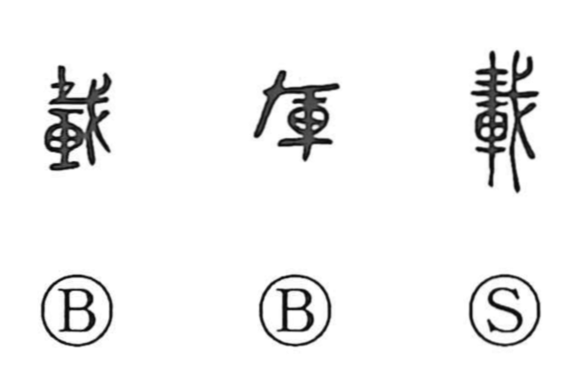

載

Kun: noseru, noru, okonau | On: sai, zai
to load ・ to carry ・ to print ・ to publish ・ to begin ・ to conduct
Explanation
A phono-semantic character. The phonetic element is a halberd (戈) shown with a sacred marker (represented by 才) fixed above its blade—an emblem used in rites to dispel impurity and inaugurate undertakings—supplying the sound sai. With 車, the chariot, as the semantic base, the graph originally denoted the ritual exorcising and purification of chariots performed as an army prepared to depart. From this arose the senses “to begin” and “to conduct.” Later it broadened to the concrete act of placing something onto a vehicle—“to load, carry”—and by analogy to placing text or images onto a surface, hence “to print, publish.”